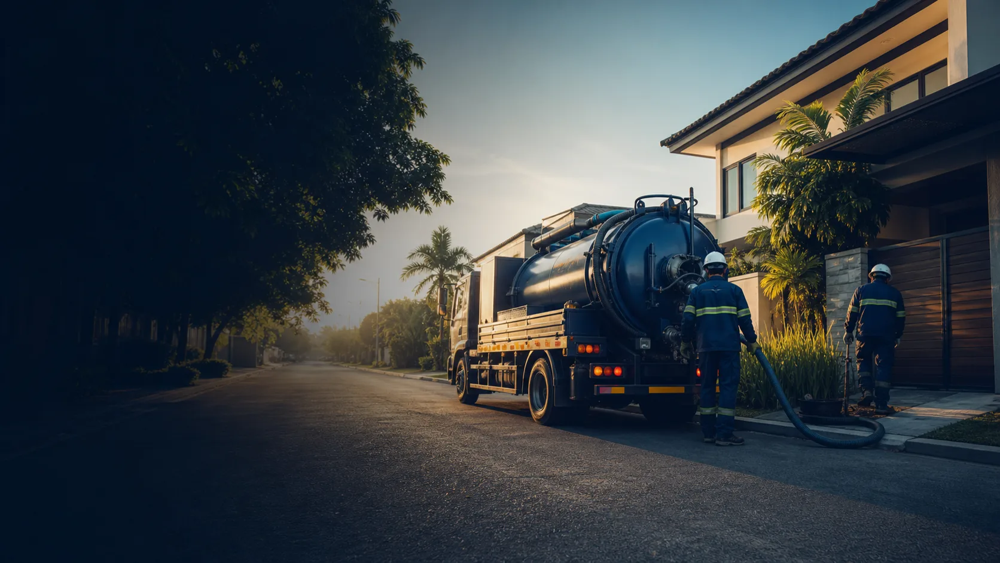

Septic tank siphoning
For maintenance, buildup, reduced capacity, and full-tank warning signs.
Learn more →
Coverage is coordinated based on the exact location, job type, schedule, and practical travel access. Send details first so availability can be checked before an appointment is discussed.
Selected Cavite and Laguna cities and municipalities are served by confirmation. Exact barangay and a nearby landmark help the team assess travel and timing.
Coverage is not implied automatically. Team schedule, service type, equipment access, and travel conditions are confirmed for every request.
For maintenance, buildup, reduced capacity, and full-tank warning signs.
Learn more →For odor, overflow, and waste-accumulation concerns.
Learn more →For blocked toilets, drains, and wastewater lines.
Learn more →Include city, barangay, property or subdivision name, and a useful landmark.
Describe symptoms, affected fixtures, and how long the issue has been present.
Share safe photos of the manhole, drain, driveway, parking, or narrow access.
The team discusses the likely service and schedule based on the details provided.
Send your city or barangay, a short description, and clear photos when safe. For urgent overflow or backup, call first.